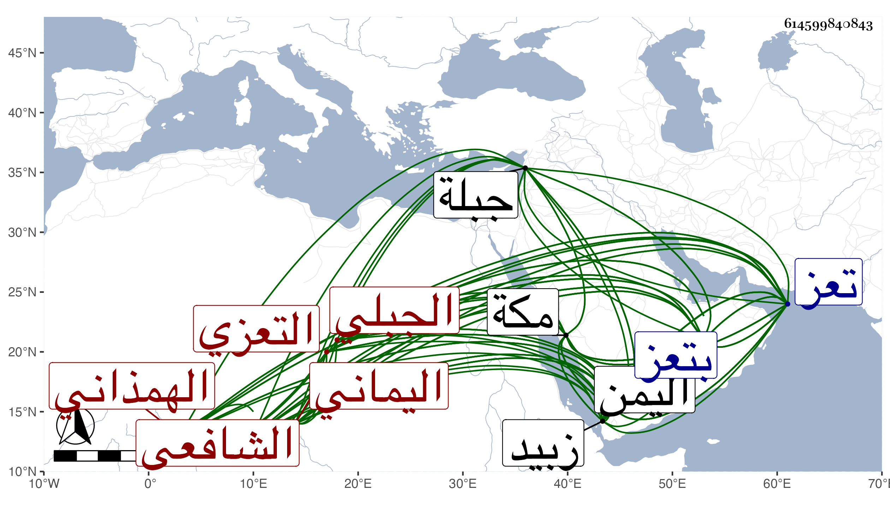

0902Sakhawi.DawLamic.ITO20230111-ara1.EIS1600.614599840843
Biography ID: 614599840843
213
أبو بكر بن محمد بن صالح بن محمد الرضي أبو محمد بن الجمال الهمذاني الجبلي بكسر الجيم بعدها موحدة ساكنة ثم التعزي اليماني الشافعي ويعرف بابن الخياط . ولد في جمادى الأولى سنة اثنتين وأربعين وسبعمائة وحفظ القرآن وتلاه بالقراآت واختار قراءة ابن كثير والحاوي وتفقه بمحمد بن عبد الرحمن بن أبي الرجا وبه تدرب بل كان أغلب أخذه للفقه عنه ثم بعمه حسن بن أبي الرجا وارتحل للحج مرة بعد أخرى فأخذ بمكة في الأولى عن الحراري وفي الثانية عن العفيف اليافعي وأخذ بتعز عن الفقيه الجمال الريمي وأبي بكر بن علي الناشري وكان يتبجح به ويقول له أنت أعرف بوسيط الغزالي مني واتفق أن الجمال الريمي سأله عن الإقالة في النكاح هل تصبح كالفسخ فقال له المسئلة في الوسيط فأحضره إليه فلم يجدها فاستمهله فأمهله ثلاثة أيام ونال منه ومن شيخه الرضي الناشري فخرج من عنده وأخذ في التفتيش عليها حتى مضى معظم الليل ولم يجدها فلما كان في السحر غلبته عيناه فرأى شيخه الرضي فعين له موضعها فلما استيقظ وجدها في المكان المعين فكانت غريبة ولازم النفيس العلوي حتى قرأ عليه الكتب الستة وغيرها بل ومن شيوخه في العلم الجمال الأسنوي والأبناسي وكأنه لقيهما بمكة كما هو ظاهر كلام النفيس العلوي وقال إن صاحب الترجمة أجل من حصل عليه وترجمه فأطنب قال وقد ترجمه الشهاب علي بن حسن الخزرجي في كتابه طراز اليمن بترجمة كبيرة وهو لها أهل وكذا ترجمه الطيب الناشري وأجاد في آخرين وترقى في العلوم وتزايد استحضاره للحاوي وشروحه وكان له منه جزء في كل يوم كالقرآن بل هو أول من ابتكر معرفته التامة به في الجبال وله عليه حواش مفيدة تناقلها الفقهاء هناك على نسخهم بها واشتهر ذكره سيما حين سمع عبد العليم أحد الأولياء المقيمين بتعز يقول وقد استيقظ ببعض المدارس بصوت عال الليلة هذه فتح على ابن الخياط بالعلم وقذف في قلبه النور فإنه بعد انتشار هذه المقالة ازداد بين الناس قبولا واتسعت حلقته ودائرته ولم يلبث أن خطبه الوزير التقي بن معيبد سنة تسع وسبعين لمدرسته فدرس فيها وكذا عينه الأفضل للمدرسة الشمسية والأشرف للمعينية في تعز ثم أضاف إليه ابنه الناصر أحمد مدرسة والده وقربه واختاره من بين سائر علماء اليمن وعول على فتياه بتعز وذي جبلة وهي مسكنه غالبا وانتهت إليه رياسة الفقه وجرى بينه وبين المجد الشيرازي مراجعات بسبب إنكاره على المشتغلين بكتب ابن عربي وصنف في المنع جزءا رد عليه المجد تعصبا مع صوفية زبيد وله بكتب العراقيين وكتب الغزالي وبالروضة والعزيز معرفة تامة ولم يزل متصديا لنشر العلم ببلده حتى أخذ عنه الجم الغفير وصار علماء اليمن تلامذته ونفع الله به في الفقه والحديث والأصلين والمنطق وغيرها كل ذلك مع الأحوال المرضية والشمائل الحسنة والمعالي المستحسنة حتى مات في صبيحة يوم الأحد حادي عشر رمضان سنة إحدى عشرة بمدرسة جبلة من المخلاف الأزهر مخلاف جعفر وشهد جنازته من لا يحصى وقد ذكره شيخنا في إنبائه ومعجمه وأنه تفقه بجماعة من أئمة بلده ومهر في الفقه وشارك في الفنون وكان يقرر من الرافعي وغيره بلفظ الأصل وله أجوبة كثيرة عن مسائل شتى ودرس بالأشرفية وغيرها من مدارس تعز وتخرج به جماعة وولي القضاء مكرها مدة يسيرة ثم استعفى اجتمعت به بتعز وسمعت من فوائده . وذكره المقريزي في عقوده باختصار وسماه أبا بكر بن محمد بن علي رحمه الله وإيانا .
